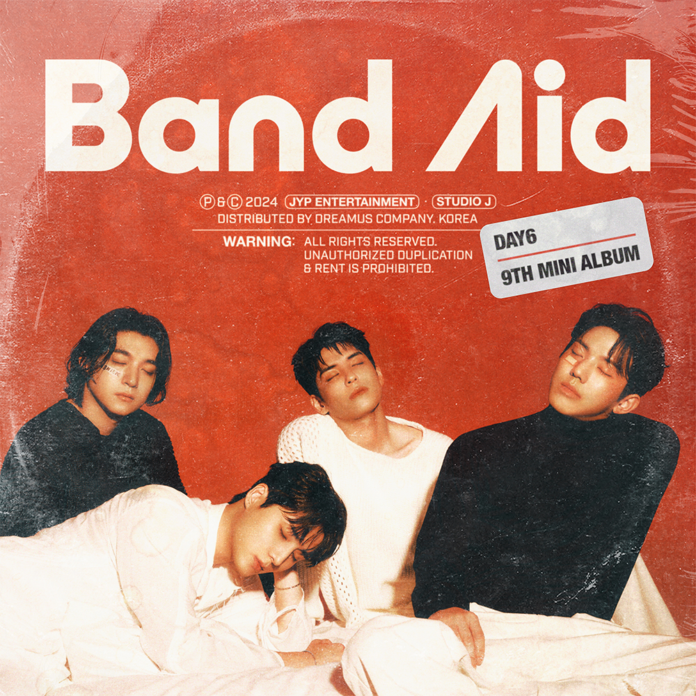
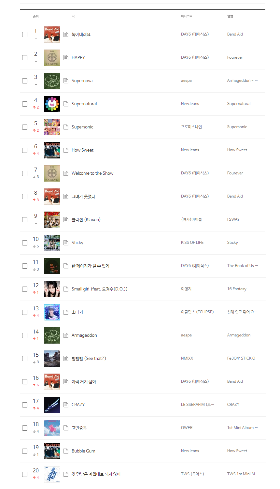
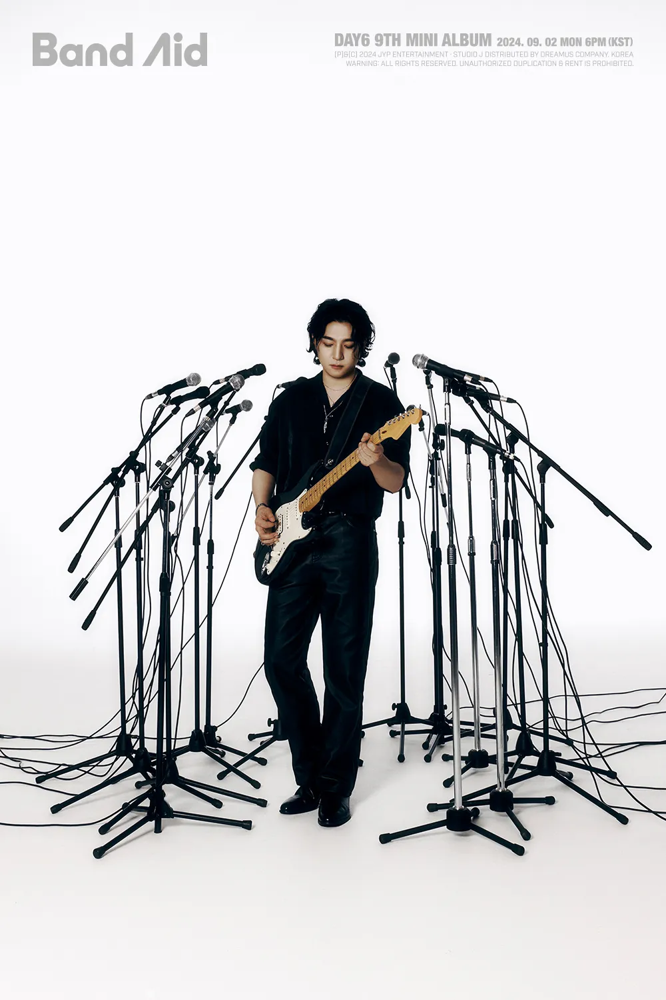
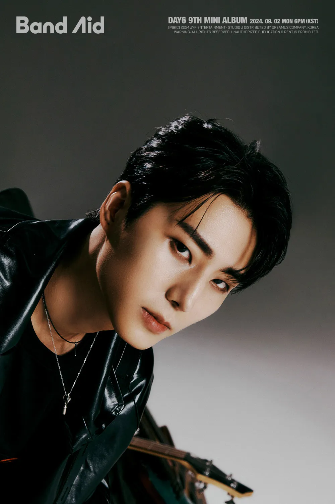
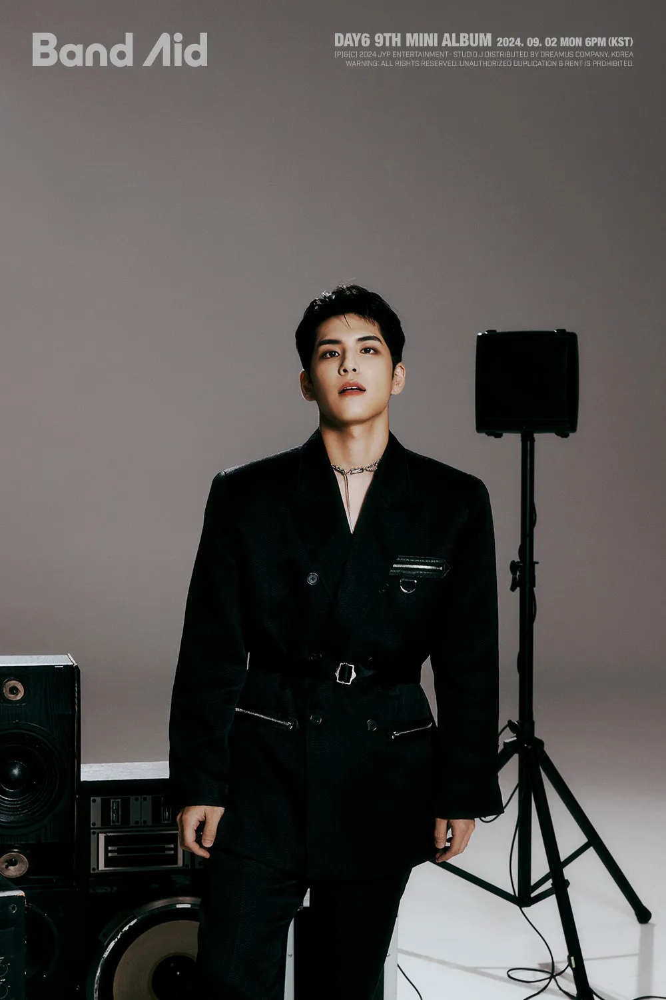
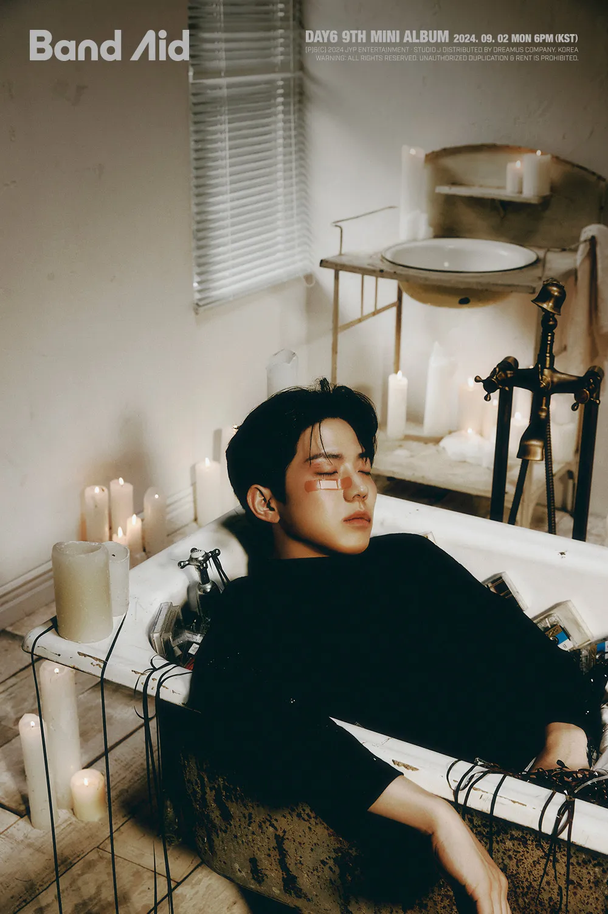

안녕하세요 한라보엠입니다.
예뻤어(2017)와 한 페이지가 될 수 있게(2019)가 20204년 1월 차트에 재진입하며 역주행의 아이콘이 된 DAY6 데이식스가 새로운 앨범 Band Aid 로 이전 앨범 Fourever 에 이어 차트를 올킬했습니다. 말이 필요 있나요. 들어보시죠 그들의 노래.

DAY6(데이식스) 녹아내려요 M/V
DAY6(데이식스) 녹아내려요 가사
1.
꺾어 버리는 한마디
깎여 버리는 웃음기
모든 게 다 바닥난 채
떨고 있었다
맘의 온도는 하강 중
서서히 얼어붙던 중
넌 달려와 뜨겁게 날 끌어안았다
걱정하는 눈빛으로
바라봐 주는 너
고생했어 오늘도 (오늘도)
한마디에
걷잡을 수 없이
스르륵 녹아내려요
죽어가던 마음을
기적처럼 살려 낸 그 순간
따뜻한 눈물이
주르륵 흘러내려요
너의 그 미소가
다시 버텨 낼 수 있게 해 줘요
2.
걱정 마 괜찮아
옆에 내가 있잖아
너의 그 말이 날
다시 일어서게 해
기막힌 우연처럼
나타나 줬던 너
두 팔 벌려
웃으며 (어서 와)
안아 주면
걷잡을 수 없이
스르륵 녹아내려요
죽어가던 마음을
기적처럼 살려 낸 그 순간
따뜻한 눈물이
주르륵 흘러내려요
너의 그 미소가
다시 버텨 낼 수 있게 해 줘요
br.
나에게 넌 행운이야
놀라움 뿐이야
이젠 내 차례
Love you hold you give you all I got
걷잡을 수 없이
스르륵 녹아내려요
죽어가던 마음을
기적처럼 살려 낸 그 순간
따뜻한 눈물이
주르륵 흘러내려요
너의 그 미소가
다시 버텨 낼 수 있게 해 줘요
DAY6(데이식스) 녹아내려요 4개 앨범 차트 인
2024년의 여름 차트는 Day6 의 역주행곡들과 뉴진스의 How Sweet 앨범, 에스파의 Supersonic, 또선재 이클립스의 소나기, QWER 의 고민중독 등 발매한지 오래된 곡들이 차트를 차지하고 있었는데요, 이번 Band Aid 발매로 Every DAY6 February, Fourever, The Book of Us : Gravity 4개의 앨범의 곡을 차트에 올려놓고 있습니다. 5년, 7년된 노래를 차트에 재진입시키는것도 대단하고 4개의 앨범을 차트에 유지하는 것도 정말 대단한 일입니다. 락 장르가 약한 한국이지만 좋은 보컬과 음악성이 있다면 대중들에게 사랑받는다는 것을 입증하고 있습니다.

DAY6(데이식스) 멤버
성진 - 기타

영케이 Young K - 베이스, 일렉기타

원필 - 키보드

도운 - 드럼

DAY6(데이식스) 역주행 노래들
한 페이지가 될 수 있게(2019)
예뻤어(2017)